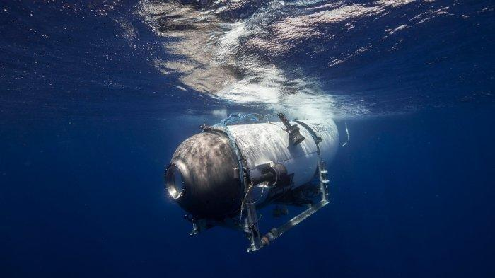

Raffi | 23.06.23
JambiTerkini.COM - Kapal selam Titan yang membawa miliarder dan pengusaha Stockton Rush, Shahzada Dawood dan putranya Suleman Dawood, Hamish Harding, dan Paul-Henri Nargeolet ditemukan hancur di dasar Samudra Atlantik Utara. Kelima penumpang dan nahkoda kapal selam Titan yang hendak melakukan penyelaman untuk melihat secara langsung reruntuhan kapal Titanic dipastikan tewas.
Kerucut ekor dan puing-puing lain dari kapal selam Titan yang hilang telah ditemukan sekitar 1.600 kaki (487 meter) dari reruntuhan kapal Titanic. Lima puing utama yang berbeda dari kapal selam Titan ditemukan di daerah tersebut. Di mana setiap ujung lambung kapal yang bertekanan ditemukan di tempat yang berbeda-beda. Kesimpulan kelima orang yang berada di dalam Kapal Selam Titan itu tewas diambil setelah jumlah oksigen yang diperkirakan di dalam kapal habis dan adanya ledakan dahsyat serta puing-puing kapal yang ditemukan.
Dikutip dari Kompas.com, operator Kapal Selam Titan, OceanGate Expeditions sudah membuat pernyataan resmi soal penemuan puing-puing kapal selam yang dinyatakan hilang sejak Minggu (18/6/2023) lalu tersebut. "Kami sekarang percaya bahwa CEO kami Stockton Rush, Shahzada Dawood dan putranya Suleman Dawood, Hamish Harding, dan Paul-Henri Nargeolet, telah tiada," kata OceanGate dikutip dari Kompas.com yang melansir pemberitaan dari Marca. "Hati kami bersama lima jiwa ini dan setiap anggota keluarga mereka selama masa yang tragis ini."
"Kami berduka atas hilangnya nyawa dan kegembiraan yang mereka bawa kepada semua orang yang mereka kenal," tambahnya. Sementara itu Komandan Distrik Penjaga Pantai Pertama Laksamana Muda John Mauger mengatakan setelah melakukan pencarian sejak pertama kali dinyatakan hilang, tim akhirnya menemukan puing-puing dari Kapal Selam Titan. Kerucut ekor dan beberapa puing kapal selam tersebut ditemukan di kedalaman sekitar 1.600 kaki (487 meter) dari reruntuhan kapal Titanic. Sementara reruntuhan Titanic sendiri berada di kedalaman 13.000 kaki di Samudra Atlantik Utara. "Ini adalah lingkungan yang sangat tak kenal ampun di dasar laut dan puing-puingnya konsisten dengan ledakan dahsyat kapal," ujar Mauger dilansir dari CNN.